Linux系统中的日志记录了系统每天发生的各种各样的事情，你可以通过它来检查错误发生的原因，
或者受到攻击时攻击者留下的痕迹。日志对于安全来说，非常重要。
一、日志介绍
日志主要包含以下内容：
历史事件：时间，地点，人物，事件
日志级别：事件的关键性程度，Loglevel
系统中常见日志及说明：
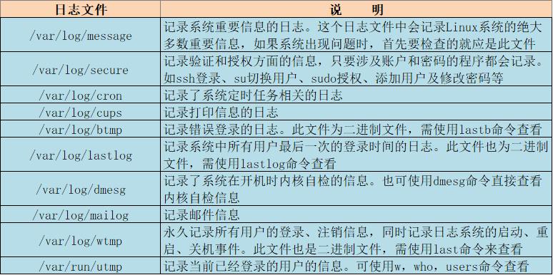
系统日志服务：
CentOS 5之前版本
syslogd
syslogd: system application 记录应用日志
klogd: linux kernel 记录内核日志
事件记录格式：
日期时间 主机 进程[pid]: 事件内容
C/S架构：通过TCP或UDP协议的服务完成日志记录传送，将分布在不同主
机的日志实现集中管理
CentOS 6和7
rsyslog特性：
多线程
UDP, TCP, SSL, TLS, RELP
MySQL, PGSQL, Oracle实现日志存储
强大的过滤器，可实现过滤记录日志信息中任意部分
自定义输出格式
ELK：elasticsearch, logstash, kibana
非关系型分布式数据库
基于apache软件基金会jakarta项目组的项目lucene
Elasticsearch是个开源分布式搜索引擎
Logstash对日志进行收集、分析，并将其存储供以后使用
kibana 可以提供的日志分析友好的 Web 界面
日志常见术语
参见man logger
facility：设施，从功能或程序上对日志进行归类
auth, authpriv, cron, daemon,ftp,kern, lpr, mail, news, security(auth),
user, uucp, local0-local7, syslog
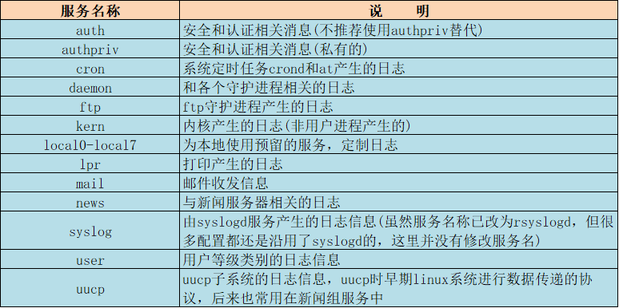
Priority： 优先级别，从低到高排序
debug, info, notice, warn(warning), err(error), crit(critical), alert, emerg(panic)
参看帮助： man 3 syslog
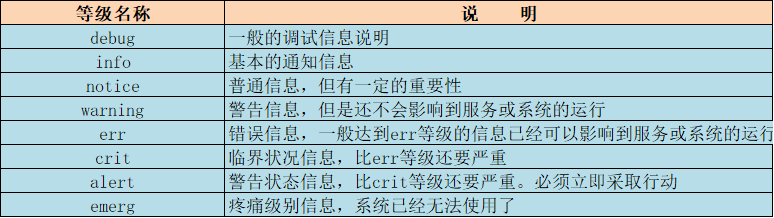
二、日志配置
程序包：rsyslog
主程序：/usr/sbin/rsyslogd
CentOS 6：service rsyslog {start|stop|restart|status}
CentOS 7：/usr/lib/systemd/system/rsyslog.service
配置文件：/etc/rsyslog.conf，/etc/rsyslog.d/*.conf
库文件： /lib64/rsyslog/*.so
配置文件格式：
由三部分组成
MODULES：相关模块配置
GLOBAL DIRECTIVES：全局配置
RULES：日志记录相关的规则配置
日志格式：
RULES配置格式：
facility.priority; facility.priority… target
facility：
*：所有的facility
facility1,facility2,facility3,…：指定的facility列表
priority：
：所有级别；如：”authpriv.”表示authpriv认证信息服务产生的所有等级日志都记录
none：没有级别，即不记录
PRIORITY：指定级别（含）以上的所有级别
=PRIORITY：仅记录指定级别的日志信息，其他等级都不记录。如：”*.emerg”表示任何日志
服务产生的日志，只要等级为emerg就记录；此用法较少见，了解即可
target：
文件路径：通常在/var/log/，文件路径前的-表示异步写入
用户：将日志事件通知给指定的用户，* 表示登录的所有用户
日志服务器：@host，把日志送往至指定的远程服务器记录
管道： | COMMAND，转发给其它命令处理
/etc/rsyslog.conf
#### RULES ####
# Log all kernel messages to the console.
内核产生的任何日志
# Logging much else clutters up the screen.
#kern.* /dev/console
# Log anything (except mail) of level info or higher.
定义了系统中除邮箱，身份验证，计划任务以外的其他日志
# Don’t log private authentication messages!
*.info;mail.none;authpriv.none;cron.none /var/log/messages
定义身份验证授权相关的日志文件路径
# The authpriv file has restricted access.
authpriv.* /var/log/secure
定义邮件日志文件路径，”-“代表异步传输
# Log all the mail messages in one place.
mail.* -/var/log/maillog
定义计划任务日志文件路径
# Log cron stuff
cron.* /var/log/cron
系统出现严重问题时，每个人都会收到提示
# Everybody gets emergency messages
.emerg :omusrmsg:
新闻相关服务日志文件
# Save news errors of level crit and higher in a special file.
uucp,news.crit /var/log/spooler
本地预留定制日志
# Save boot messages also to boot.log
local7.* /var/log/boot.log
##################################
三、日志管理
Journalctl工具
Systemd 统一管理所有 Unit 的启动日志。带来的好处就是，可以只用
journalctl一个命令，查看所有日志（内核日志和应用日志）。日志的配置文件
/etc/systemd/journald.conf
journalctl用法
查看所有日志（默认情况下 ，只保存本次启动的日志）
journalctl
查看内核日志（不显示应用日志）
journalctl -k
查看系统本次启动的日志
journalctl -b
journalctl -b -0
查看上一次启动的日志（需更改设置）
journalctl -b -1
查看指定时间的日志
journalctl –since=”2017-10-30 18:10:30″
journalctl –since “20 min ago”
journalctl –since yesterday
journalctl –since “2017-01-10” –until “2017-01-11 03:00”
journalctl –since 09:00 –until “1 hour ago”
显示尾部的最新10行日志
journalctl -n
显示尾部指定行数的日志
journalctl -n 20
实时滚动显示最新日志
journalctl -f
查看指定服务的日志
journalctl /usr/lib/systemd/systemd
查看指定进程的日志
journalctl _PID=1
查看某个路径的脚本的日志
journalctl /usr/bin/bash
查看指定用户的日志
journalctl _UID=33 –since today
查看某个 Unit 的日志
journalctl -u nginx.service
journalctl -u nginx.service –since today
实时滚动显示某个 Unit 的最新日志
journalctl -u nginx.service -f
合并显示多个 Unit 的日志
journalctl -u nginx.service -u php-fpm.service –since today
查看指定优先级（及其以上级别）的日志，共有8级
0: emerg
1: alert
2: crit
3: err
4: warning
5: notice
6: info
7: debug
journalctl -p err -b
日志默认分页输出，–no-pager 改为正常的标准输出
journalctl –no-pager
以 JSON 格式（单行）输出
journalctl -b -u nginx.service -o json
以 JSON 格式（多行）输出，可读性更好
journalctl -b -u nginx.serviceqq -o json-pretty
显示日志占据的硬盘空间
journalctl –disk-usage
指定日志文件占据的最大空间
journalctl –vacuum-size=1G
指定日志文件保存多久
journalctl –vacuum-time=1years
Logrotate工具
logrotate 程序是一个日志文件管理工具。用来把旧的日志文件删除，并创建新
的日志文件，称为日志转储或滚动。可以根据日志文件的大小，也可以根据其
天数来转储，这个过程一般通过 cron 程序来执行
配置文件：/etc/logrotate.conf
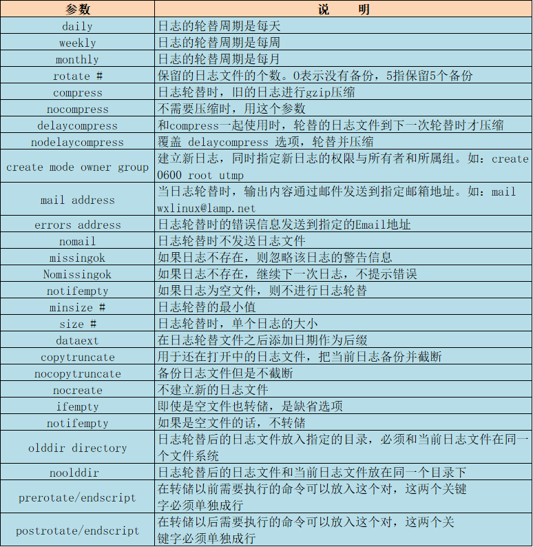
四、远程日志
Linux系统中的日志不仅可以在本地存储，还可以远程发送至指定的主机，设置指定的Mysql数据库中。
启用远程日志服务：
通常的日志格式：
事件产生的日期时间 主机 进程(pid)：事件内容
如： /var/log/messages,cron,secure等
配置rsyslog成为日志服务器
#### MODULES ####
# Provides UDP syslog reception
$ModLoad imudp
$UDPServerRun 514
# Provides TCP syslog reception
$ModLoad imtcp
$InputTCPServerRun 514
五、实验：实现远程日志
前期准备：
虚拟机三台
发送日志端：192.168.30.10
远程接收端：192.168.30.17
访问端：192.168.30.11
发送日志端：
修改sshd默认日志为local2，记录等级至少为INFO
vim /etc/ssh/sshd_config
vim /etc/rsyslog.d/ssh.conf
local2.* @192.168.30.17 #若使用tcp协议，格式：@@IP
local2.* /var/log/local2.log #若要本机和远程都记录日志可添加此行
重启日志及SSH服务
systemctl restart rsyslog sshd
远程接收端：
开启514端口
#$ModLoad imudp ==> 去掉注释
#$UDPServerRun 514 ==> 去掉注释
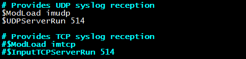
# Save boot messages also to boot.log
local2.* /var/log/local2.log #添加此行
重启日志服务
systemctl restart rsyslog
查看514端口是否已开启
ss -untl
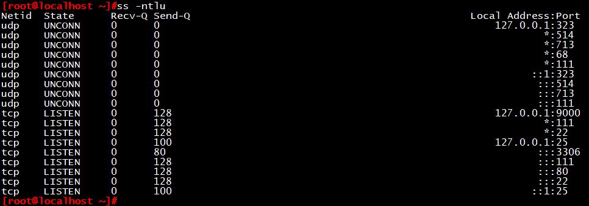
测试：
切换到访问端ssh连接192.168.30.10
ssh 192.168.30.10
切换到远程接收端，已收到日志发生端发送过来的日志
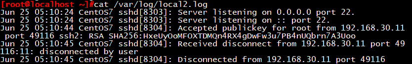
六、实验：实现基于MySQL的远程日志
前期准备：
虚拟机三台
发送日志端：192.168.30.10
远程接收端：192.168.30.17
访问端：192.168.30.11
发送日志端：
安装rsyslog-mysql包
yum install rsyslog-mysql
rpm -ql rsyslog-mysql
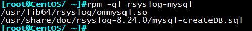
将mysql- createDB.sql发送到远程接收端
scp /usr/share/doc/rsyslog-8.24.0/mysql-createDB.sql 192.168.30.17:/root/
切换到远程接收端：
导入数据库
mysql < mysql-createDB.sql
mysql > use Syslog
mysql > show tables;
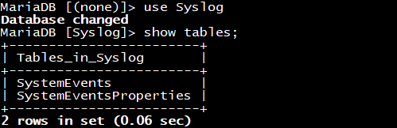
创建一个syslog授权用户
mysql > grant all on Syslog.* to syslog@’192.168.30.%’ identified by ‘centos’;
musql > flush privileges;
日志发送端：
vim /etc/rsyslog.conf
#### MODULES ####
$ModLoad ommysql #添加ommysql模块
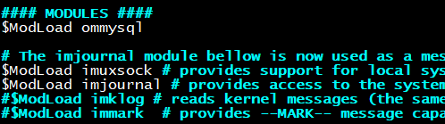
#### RULES ####
*.info;mail.none;authpriv.none;cron.none :ommysql:192.168.30.17,Syslog,syslog,centos
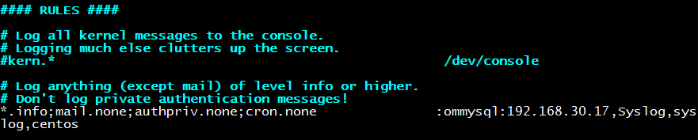
重启日志服务
systemctl restart rsyslog
模拟一条日志信息
logger “this is a test log”
切换回远程接收端
能看到刚刚发送的模拟日志信息
Mysql> select * from SystemEvents\G;
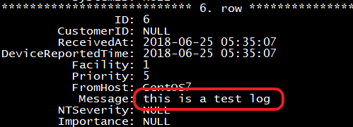
七、实验：通过loganalyzer展示数据库中的日志
前期准备：
承接基于MySQL远程日志的实验环境
具体步骤：
在rsyslog服务器上准备amp或nmp组合
yum install httpd php php-mysql php-gd
安装LogAnalyzer
tar xvf loganalyzer-4.1.5.tar.gz
cp -a loganalyzer-4.1.5/src /var/www/html/loganalyzer
cd /var/www/html/loganalyzer
touch config.php
chmod 644 config.php
重启httpd服务
systemctl start httpd
打开浏览器: http://192.168.30.17/loganalyzer/,出现下图页面，进行一些数据库的配置后，就可以进入
loganlyzer管理数据库中的日志了
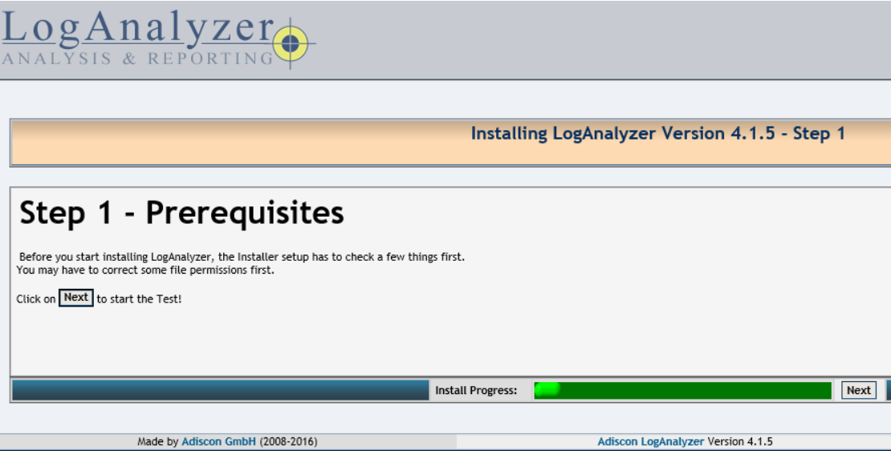